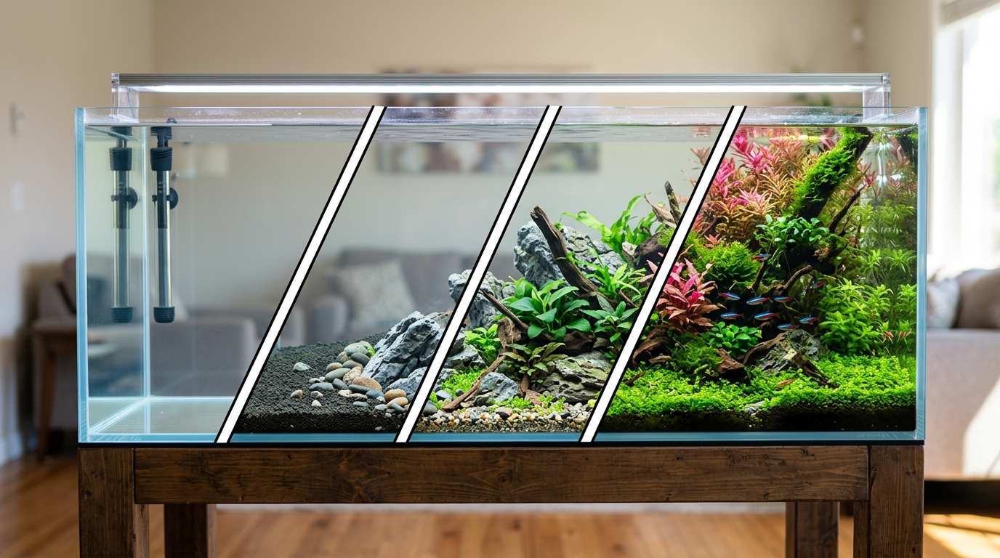
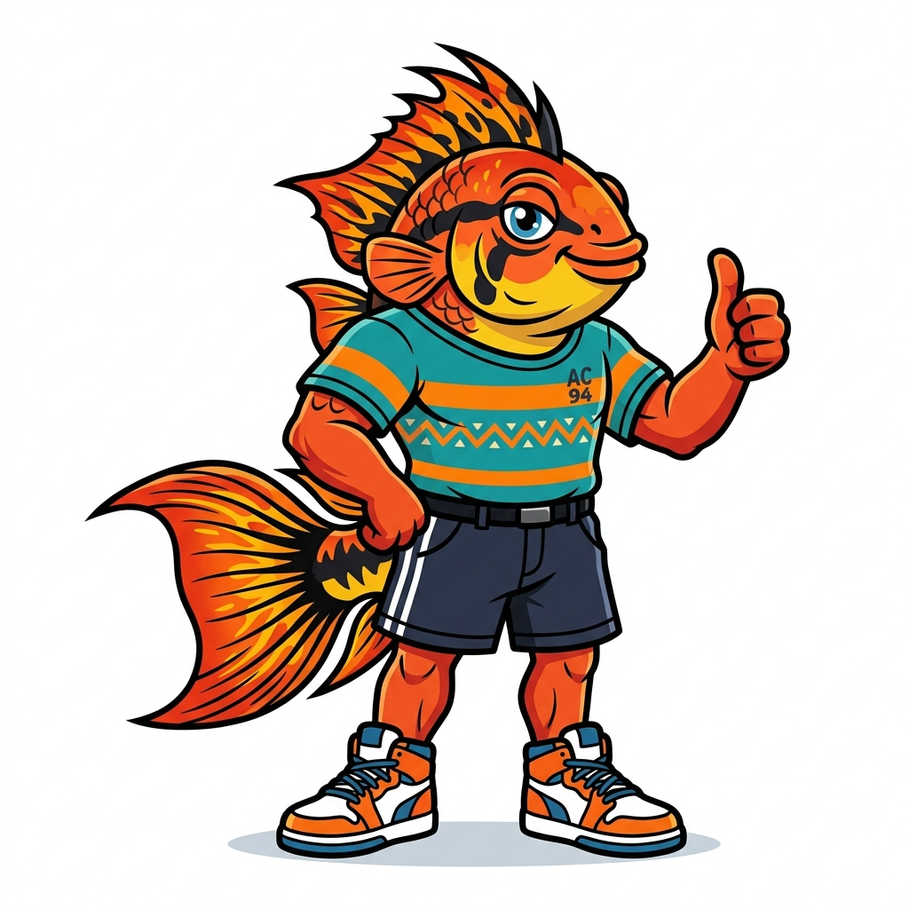

L'acquario d'acqua dolce reso semplice, passo dopo passo.

Dalla scelta della vasca al fondo ideale, dalle piante giuste fino alla combinazione compatibile di pesci e valori dell'acqua. AcquarioPassoPasso.it ti guida senza stress con simulatori 2D animati e consigli trasparenti.